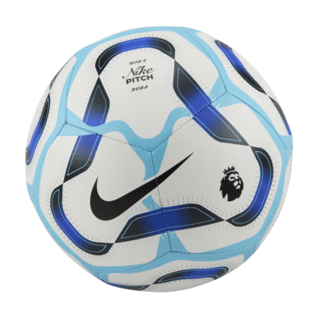
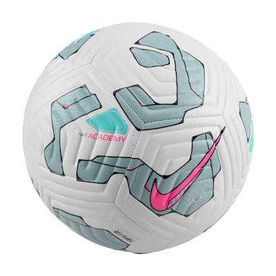
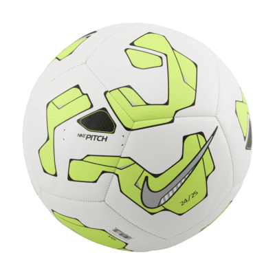

Balones

Para los zapatos tenemos a nuestro colaborador especial para eso y es nada mas ni menos que la marca de Nike para los tenis que utilizan nuestros deportistas, para que disfruten de jugar con el mejor equipo posible con la mayor comodidad en sus partidos
Nike Skills
Balón de fútbol
Cuando quieras perfeccionar tu juego de pies, el tamaño más pequeño de esta pelota la hace ideal para practicar tus habilidades y ganar confianza con el balón.
$499

Premier League Pitch
Balón de fútbol Nike
Perfecciona tus habilidades con este balón de la Premier League. Las ranuras moldeadas reducen el arrastre, y la textura adherente mejora el control del balón sin importar el clima.
$549

Nike Academy
Balón de fútbol
Optimiza los regates con una cubierta texturizada, visibilidad con estampados de alto contraste y precisión con ranuras moldeadas para que puedas concentrarte en el partido y no en el equipo.
$699

Nike Pitch
Balón de fútbol
Demuestra tu pasión por el deporte con el balón de fútbol Nike Pitch. Diseñado para las sesiones de entrenamiento de principiante y para mejorar el juego de pies, este balón cuenta con una cubierta duradera para mantener un rendimiento constante.
$549